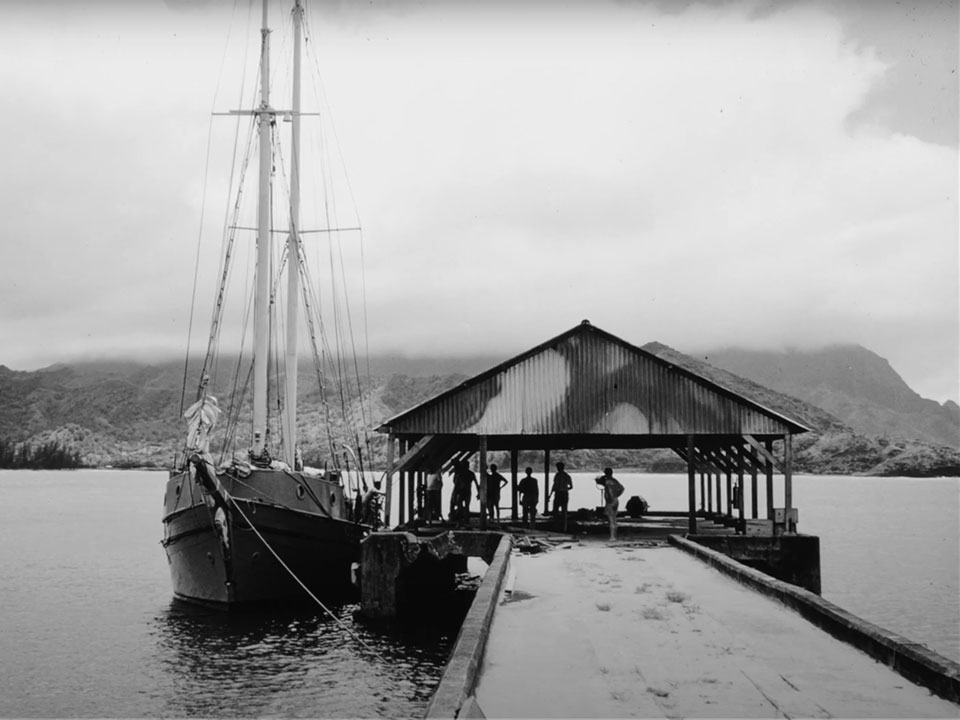

A Life of Chromatic
Shade:
S.Neil Fujita’s Visionary Fusion


Portrait of Fujita. Neil Fujita (1921-2010)Photograph: Conway Studios Corp., courtesy Kenji Fujita, KCET, and Japanese American National Museum.
“By accident, I happened to find a book in my high school library by a guy named S. Neil Fujita [...] it was called Aim for a Job in Graphic Design/Art. I opened the book up, and it was like receiving an instruction manual for my future career: it was all right there. I was about 15 at the time, and I thought, “This is what I want to do.” I didn’t know a single living graphic designer, and no one I knew did anything even resembling graphic design; but all of a sudden, I saw this path. To a certain degree, that was the last big decision I made about my life’s work.”
—Michael Bierut, Interview with Tina Essmaker, The Great Discontent
About
“I wanted to look for a job in graphic art because I knew that I had to make a living and that painting wasn’t going to do it. [...] I went down to Philadelphia, and Coiner (Charles Coiner, N. W. Ayer & Son) looked at my portfolio and offered me a job, but it wasn’t because of my commercial work—it was because of my paintings!”
—S. Neil Fujtia,Waxing Chromatic: An Interview with S. Neil Fujita By Steven Heller

Born on the island of Kauai, Hawai‘i, in 1921 as a Japanese-American Nisei, S. Neil Fujita’s journey to devote himself to art and design began when he sailed out of his home. His portfolio is rich in colors—starting a design department for Columbia Records, creating jazz album covers, movie titles, book covers, painting, writing, and teaching at top design schools. That journey was not so easy, though. Like many other Japanese-Americans, his life was disrupted by World War 2 and the issue of Executive Order 9066. While these events do not look to overshadow his prolific portfolio, his works reflect Fujita’s resilience and fearlessness.
Sailing out of Hawai‘i, studying in LA
Sadamitsu Neil Fujita grew up in Waimea, Kaua‘i, Hawai‘i—a village located about 125 miles from Honolulu. He was sent to a boarding school in Honolulu when he was in high school, where the teachers encouraged him to pursue art. Upon graduation, he sailed out from Hawaii, heading to Los Angeles, where he enrolled at Chouinard Art Institute.


Incarcerated in Wyoming, joinined the 442nd Regimental Combat Team

He was 20 years old, studying art, when the attack on Pearl Harbor happened. Following the event, President Roosevelt signed Executive Order 9066 in 1942. This order authorized the unconstitutional removal of more than 100,000 Japanese-Americans of West Coast to to 10 incarceration sites in the further inland. The government made no charges against them, and all lost personal liberties; most lost homes and property as well. More than half of them were American citizens, and Fujita was among them.

 Heart Mountain Relocation Center was one of the ten incarceration sites built in further inland usually remote and isolated, such as Tule Lake (where dissidents were gathered) and Manzanar in California, Gila River and Poston in Arizona, Jerome and Rohwer in Arkansas, Minidoka in Idaho, Topaz in Utah, Granada in Colorado, and Heart Mountain in Wyoming where Fujita was sent to. According to the National Archive, Incarceration rates were significantly lower in the territory of Hawaii, where Japanese Americans made up over one-third of the population and their labor was needed to sustain the economy. However, martial law had been declared in Hawai‘i immediately following the Pearl Harbor attack, and the Army issued hundreds of military orders, some applicable only to persons of Japanese ancestry.
Heart Mountain Relocation Center was one of the ten incarceration sites built in further inland usually remote and isolated, such as Tule Lake (where dissidents were gathered) and Manzanar in California, Gila River and Poston in Arizona, Jerome and Rohwer in Arkansas, Minidoka in Idaho, Topaz in Utah, Granada in Colorado, and Heart Mountain in Wyoming where Fujita was sent to. According to the National Archive, Incarceration rates were significantly lower in the territory of Hawaii, where Japanese Americans made up over one-third of the population and their labor was needed to sustain the economy. However, martial law had been declared in Hawai‘i immediately following the Pearl Harbor attack, and the Army issued hundreds of military orders, some applicable only to persons of Japanese ancestry.
Despite the disheartening condition, Japanese Americans in the camp thrived, building community in each camps. Among those social activities, Heart Mountain Relocation Center had their own newspaper, “Sentinel.” Fujita took the job as an art director for it, applying his drawing to newspaper as well.
In 1943 and 1944, the US government realized that they need more men than ever; even if they were “enemy aliens.” President Roosevelt activated the 442nd Regimental Combat Team on February 1, 1943, an Army unit comprised of Japanese Americans. Fujita volunteered himself to join, and was sent to the training facility, Camp Shelby in Mississippi. In the documentary, “Masters of Modern Design: The Art of the Japanese American Experience,” Fujita saids that he trained four months there. On April 22, 1944, the unit left Camp Shelby setting off to Europe for their first overseas assignment. In the interview with Steven Heller, Fujita states that he served in assignments in the Western Pacific, including East Asia, the Philippines and Calcutta.
Coming Back from Frontline to Graphic Art, settling in the East Coast

After the war, Fujita returned to Chouinard Art Institute on the GI Bill, where he met his wife, Aiko Tamaki. Upon completing his studies, his mentors recommended to travel east to look for opportunities. He joined NW Ayer & Sons in Philadelphia, where he worked on an advertising for Container Corporation America (1952). This piece was awarded gold medal from the Art Directors Club. Soon after, William Golden (1911–1959), the art director of CBS contacted Fujita to lead a new art department at Columbia Records.
Fujita took the offer and joined Columbia Records in 1954. At Columbia, Fujita became one of the first graphic designers to employ both men and women in a racially integrated office, working collaborating with painters, photographers, and illustrators for the production of album artwork. The list of artists include names such as Andy Warhol, Ben Shahn, and Milton Glazer. Fujita created around 50 jazz album covers, including numbers of iconic albums from Dave Brubeck, Miles Davis, the Jazz Messengers, and Charles Mingus, among others. Jazz album was the peak of pop culture at that time.

“Neil, if do this you'll be taking work and income away from the two studios that have been working with us for many years, so you're going to meet up with a lot of crap. First of all, you're Japanese and you're going to be called all sorts of names, from nip to jap and everything else. Do you still want to do it?”
—William Golden, Waxing Chromatic: An Interview with S. Neil Fujita By Steven Heller
With the intention of expanding his portfolio, he left Columbia Records in 1957. As he intended, his career as a graphic designer flourishes; his following works include, the book cover for “the Godfather” by Mario Puzo and “In Cold Blood” by Truman Capote. He quickly became John Updike's designer of choice. He worked on logos for the Today Show, Record Source International, and Shubert Theaters. While tail blazing in graphic design, he continued to draw, picked up new learnings; he went to Columbia University at night to study English literature and writing. In 1968, Fujita wrote Aim for a Job in Graphic Design/Art, part of a self-help series of books, which inspired young students to coming into design. Among them is Michael Bierut. Fujita later taught in top design schools such as Philadelphia Museum College of Art (now University of the Arts) in Philadelphia, Pratt Institute and Parsons School of Design in New York.